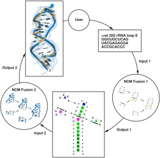

Our goal is to further understanding of RNA, its structure and behavior.
We are part of the
Institute for Research in Immunology and Cancer
and the
Computer Science Department
of Université de Montréal.
|
We are develop a suite of programs to analyze, model, predict, and determine RNA 2D and 3D structure. |
 |
|
We are developing a suite of programs to analyze, model, predict, and determine RNA 2D and 3D structure. |
The RNA Engineering “wet” branch is now up and fully functioning. We want to thank our collaborators the Canadian Foundation for Innovation, PerkinElmer and IBM for their financial support. Research In this lab in the long-terms, we want to understand and characterize human gene regulatory networks; link cell content to phenotypes; and, design and create artificial molecular components to peek and poke cell information and programmes. Software Funding News
Computational analysis and modeling of noncoding ribonucleic acid structure and function ()
$265,000 over 5 years
Natural Sciences and Engineering Research Council of Canada
Computational methods to predict RNA mutations that affect tertiary structure ()
$207,000 over three years
FQRNT (Fonds de recherche nature et technologie)
co-applicant Jérôme Waldispuhl, McGill
Computational prediction of RNA 3D structure using low resolution data and a new RNA folding algorithm ( )
National Institutes of Health - National Institute of General Medical Sciences
$830,494 over five years
Developing and testing small RNA-based multiple-target gene therapies against cancer and AIDS ()
Canadian Institutes of Health Research Spring 2009 HIV/AIDS Research Initiative Biomedical/Clinical Stream
$379,498 over three years
co-applicant Gerardo Ferbeyre , Université de Montréal